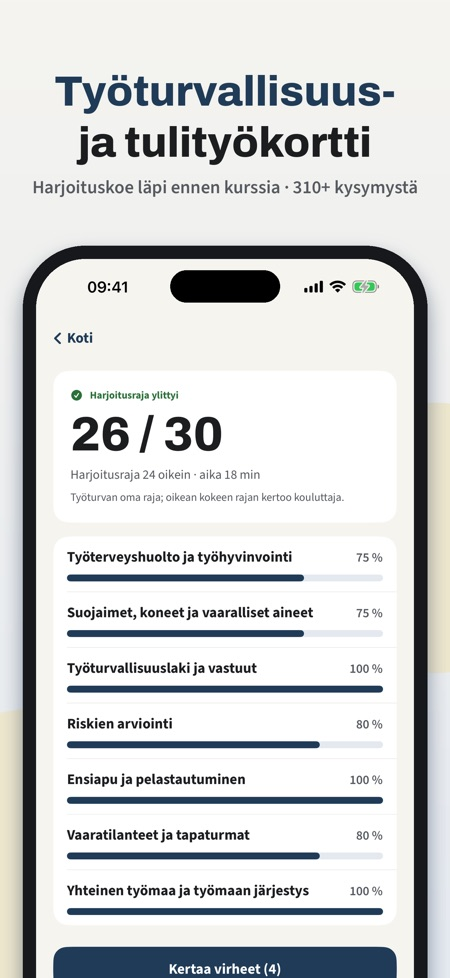
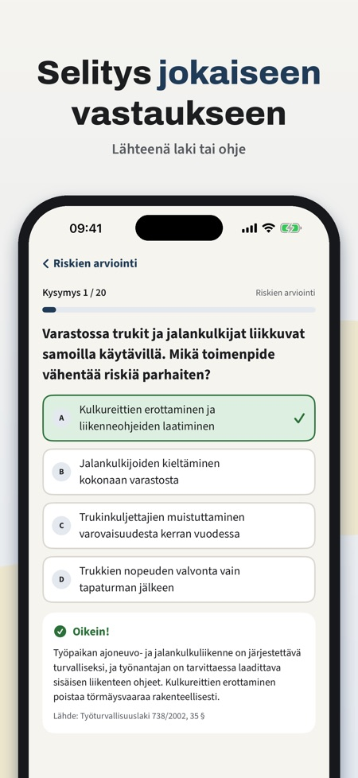
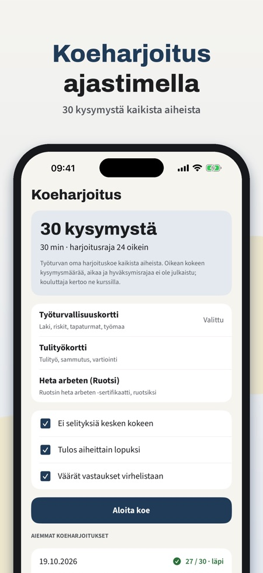

Työturva auttaa valmistautumaan työturvallisuuskortin (TTK) ja tulityökortin kokeisiin suomeksi, ennen kurssia tai ennen kortin uusimista. Jokaisessa kysymyksessä on selitys.



Työturvallisuuskortin (TTK) ja tulityökortin kokeisiin. Valitset kortin sovelluksen etusivulta.
Kyllä, jokaisessa kysymyksessä on selitys ja aihe, johon se liittyy.
Kyllä, koeharjoitus tehdään ajastimella ja tulos näytetään aiheittain.
Osa kysymyksistä, yksi kokonainen koeharjoitus, 10 kysymyksen minikoe, sanasto ja voimassaolomuistutus.
Ei. Kertaosto avaa kaikki kysymykset, rajattomat koeharjoitukset, virheiden kertauksen ja tilastot.
Kyllä. Syötä kurssipäivä, niin saat muistutuksen ennen kuin kortti vanhenee.
Et. Työturva on itsenäinen harjoitussovellus eikä myönnä kortteja; kortin saa vain kouluttajan pitämältä kurssilta.
Mene TTK-kokeeseen ja tulityökortin kokeeseen valmiina.
Työturva auttaa valmistautumaan työturvallisuuskortin (TTK) ja tulityökortin kokeisiin suomeksi – ennen kurssia tai ennen kortin uusimista.
Osa kysymyksistä, yksi kokonainen koeharjoitus, 10 kysymyksen minikoe, sanasto ja voimassaolomuistutus ovat käytettävissä ilman ostoa. Kertaosto avaa kaikki kysymykset, rajattomat koeharjoitukset, virheiden kertauksen ja tilastot. Ei tilausta.
Työturva on itsenäinen harjoitussovellus. Se ei ole Työturvallisuuskeskuksen, SPEKin tai muun kouluttajan sovellus eikä myönnä kortteja; kortin saa vain kouluttajan pitämältä kurssilta. Kysymykset on kirjoitettu itse julkaistujen aihealueiden pohjalta.